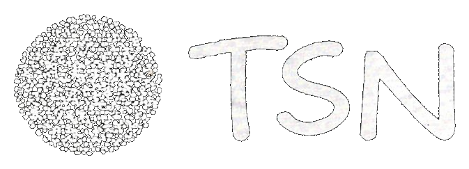

Publicações recentes da comunidade.
Faça login para seguir tags e abrir um feed cronológico só com os temas que você acompanha.
Escolha se este conteúdo será um post normal ou um post com questionário.
Essas informações aparecem em qualquer tipo de post.
Até 4 imagens JPG, PNG ou WebP, com no máximo 5 MB cada.